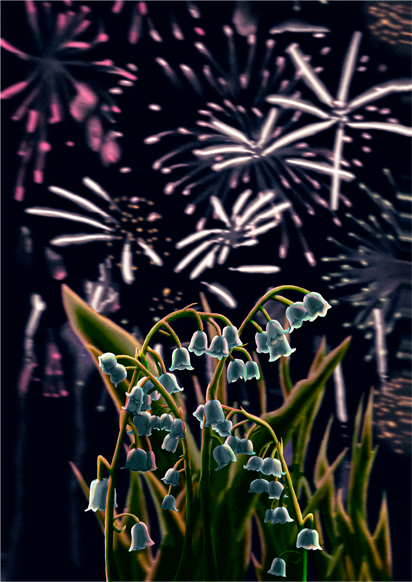
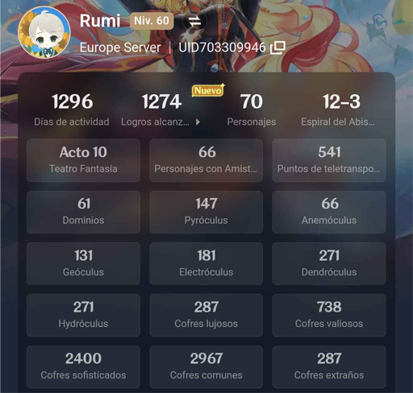

Qué me gusta
- Dibujar
- Jugar videojuegos
- Leer
- Escuchar música, más en concreto electrónica
- Fotografiar
Últimamente de mis preferencias de dibujar son las plantas, flores o también si tengo la inspiración dibujo personas

Preferiblemente de 1 solo jugador y sobretodo que sean gachas
Normalmente paisajes en los cuales me guste la iluminación y esté lindo el paisaje
Tiempo libre
- Jugar videojuegos como:
- Genshin Impact
- Geometry Dash
- Zenless Zone Zero
- Infinity Nikki
- Dibujar
- Leer en la noche
- Ver anime

Además de esos también he jugado Omori, Subnautica, Subnautica Below Zero, Watch Dogs y Watch Dogs 2